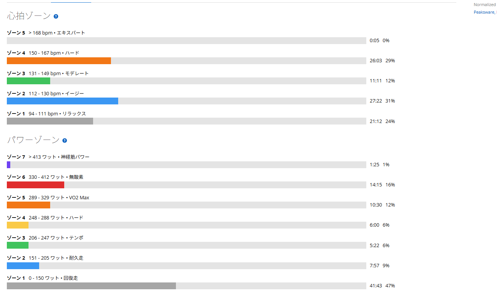

Garminに無酸素不足と言われたので、330W以上でゴルビーしてきた
前回、Garminに「無酸素運動不足」と言われた。高強度有酸素は足りている。でも無酸素が足りない。なかなか失礼な言い方である。
そこでAIと相談して、いつもの300W前後のゴルビーではなく、もう少し高出力に寄せたメニューを作った。Garminのパワーゾーンでは330W以上が無酸素。なら今日は、そこへちゃんと踏み込んでみる。

まとめ
- Garminの無酸素不足を受けて、330W以上を意識した「無酸素寄せゴルビー」を実施した。
- 5分走は340W、341W、328W、318W、319Wで、想定よりかなり踏めた。
- パワーゾーンではZ6無酸素に14分以上入った一方、Garminの無酸素TEは1.3だった。
- 前にやったゴルビーより辛くない体感があり、高出力耐性が少しついてきた可能性がある。
- TSS123.2、IF0.922なので軽い練習ではない。明日の脚で本当のダメージを確認する。
今日の狙い
前回AIと相談した時点では、5分×5本で平均315〜325Wくらい。各本の最後30〜60秒だけ330W以上を入れる、という少し控えめな設計だった。5分間ずっと330W以上はきつすぎるので、VO2 Max寄りの5分走に無酸素ゾーンを混ぜる作戦である。
ただ、実際に走ってみると思ったより踏めた。良い意味で計画を上振れした日だった。こういう日は嬉しいが、あとで脚が請求書を持ってくることがあるので油断はできない。
5分走の結果
メインの5分走は、1本目340W、2本目341W、3本目328W、4本目318W、5本目319W。最初の2本は340W前後まで入り、後半も完全には崩れなかった。
- 1本目5分 / 平均340W / NP339W
- 2本目5分 / 平均341W / NP344W
- 3本目5分 / 平均328W / NP331W
- 4本目5分 / 平均318W / NP322W
- 5本目5分 / 平均319W / NP322W
特に良かったのは、5本目で終わらなかったこと。最初だけ突っ込んで終わりではなく、最後まである程度まとめられた。前にやったゴルビーより高出力寄りだったはずなのに、体感としては今回の方が少し楽だった。ここがかなり面白い。
前より辛くなかった
もちろん楽ではない。5分340Wは普通にきつい。それを5本やっているので、涼しい顔で「余裕でした」と言える練習ではない。
ただ、前回のゴルビーの方が、精神的にも肉体的にも追い込まれていた感じがあった。今回は「この苦しさなら5分は我慢できる」という感覚があった。前は300W台に入っただけで心が少し早退しそうになっていたが、今回は330W以上でもすぐには折れなかった。
高出力への耐性が少しついてきたのかもしれない。あるいは、5分間の苦しさに対して、こちらの諦めが悪くなってきたのかもしれない。どちらにしても、富士ヒルに向けた材料としては悪くない。
Z6には入った。でも無酸素TEは1.3
今回のパワーゾーンを見ると、狙い通りZ6の無酸素ゾーンに14分以上入っていた。Z5のVO2 Maxも10分以上。数字だけ見ると、Garminに「無酸素が足りない」と言われたことへの返答としてはかなり頑張っている。

ただし、Garminの無酸素トレーニング効果は1.3で「多少のメリット」だった。パワーゾーン的には無酸素に入っていても、5分走という形は生理的にはVO2 Maxから高強度有酸素寄りなのだと思う。
Garminの無酸素TEだけを上げたいなら、30秒〜1分の400W以上を繰り返す方が付きやすいのかもしれない。でも富士ヒルを考えるなら、今日の5分高出力はかなり実用的だと思う。Garminの点数稼ぎだけをやっても、登りが速くなるわけではない。
レストを落とせたのも良かった
今回良かったのは、5分走だけではない。レスト区間をしっかり落とせた。ラップを見ると、レストは平均46W、20W、19W、21Wあたりまで落ちている。
外の登り下りを使っている影響もあるが、踏むところは踏む、休むところは休む、という切り替えができていた。前はレストで変に踏んで、次の本数に響くこともあった。今回はそのへんが少しマシだった。
今回やってみて思ったこと
今日はかなり良い練習だった。Garminに無酸素が足りないと言われ、AIと相談し、330W以上が無酸素ゾーンだと確認して、実際にそのゾーンへ入れてきた。言われたことに対して、わりと正面から返した日である。
結果は想定以上だった。前より辛くなかった体感もある。ただし、これで完全に強くなったと決めつけるのは早い。TSS123.2、IF0.922、獲得標高646m。普通に重い練習である。
次に見るべきは明日の脚だと思う。重いのか、意外と動くのか。Garminの負荷バランスで無酸素がどれくらい増えるのか。今日のメニューは成功だったが、本当の評価は明日の体が教えてくれる。たぶん少し厳しめに。
自分用メモ
- メニュー無酸素寄せゴルビー 5分×5本
- 5分走340W / 341W / 328W / 318W / 319W
- 全体31.55km / 1時間27分 / 獲得標高646m
- 負荷NP254W / IF0.922 / TSS123.2
- ゾーンZ6無酸素 14分15秒 / Z5 VO2 Max 10分30秒
- 心拍平均131bpm / 最大168bpm
- 確認明日の脚とGarmin負荷バランスを見る